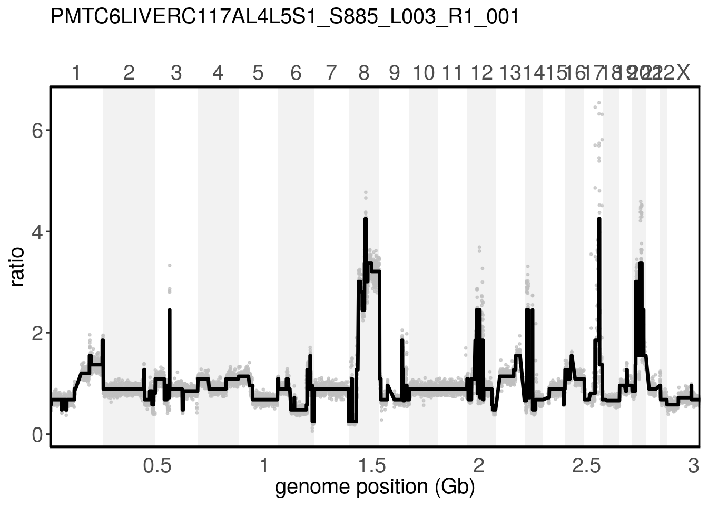
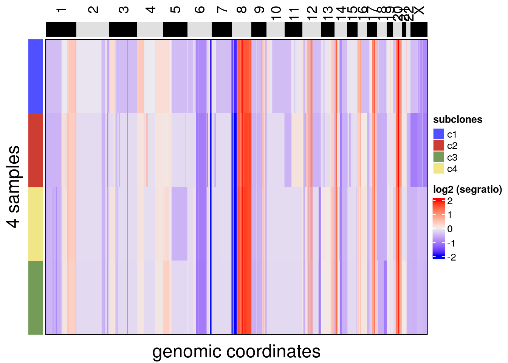

6 Analysis and Visualization module
The analysis and visualization module from CopyKit work in synergy to help you analyze and assess the results from your day.
The analysis module provides the following functions: runUmap(), calcInteger(), findSuggestedK(), findClusters(), calcConsensus() and runPhylo().
The visualization module functions are: plotMetrics(), plotRatio(), plotUmap(), plotHeatmap(), plotConsensusLine() and plotGeneCopy().
6.1 plotMetrics()
plotMetrics() can be used to plot any information available in the `colData(). As a reminder, we can check the elements within coldata() with:
names(colData(tumor))## [1] "sample" "reads_assigned_bins" "reads_unmapped"
## [4] "reads_duplicates" "reads_multimapped" "reads_unassigned"
## [7] "reads_ambiguous" "reads_total" "percentage_duplicates"
## [10] "overdispersion" "breakpoint_count" "is_normal"
## [13] "find_normal_cv" "filter_corr_value" "filtered"plotMetrics() argument metric defines which information to plot. whereas the argument label, if supplied, will color the plot based on that information.
plotMetrics(tumor, metric = c("overdispersion",
"breakpoint_count",
"reads_total",
"reads_duplicates",
"reads_assigned_bins",
"percentage_duplicates"),
label = "overdispersion")## Coloring by: overdispersion
6.2 plotRatio()
It is often important to visualize that the segmentation behaved as expected and closely follows the ratios. Not missing important events. Ratio plots are a great tool for this. You can plot ratio plots with the plotRatio() function. plotRatio() has two different modes. When the input is the CopyKit object an interactive app will run and you can select which cell will be visualized.
plotRatio(tumor)
If plotRatio() is given a sample name only the plot for that cell will be shown.
plotRatio(tumor, "PMTC6LiverC117AL4L5S1_S885_L003_R1_001")
6.3 runUmap()
runUmap uses generates a UMAP reduced dimensions embedding, the resulting embedding is stored within the scCNA reducedDim slot and is an important pre-processing step to the findClusters feature.
tumor <- runUmap(tumor)## Using assay: logr## Embedding data with UMAP. Using seed 17## Access reduced dimensions slot with: SingleCellExperiment::reducedDim(scCNA, 'umap').## Done.Additional arguments to control umap parameters can be passed on torunUmap() with the ‘…’ argument. As exemplified in the code below.
By default, CopyKit will pass to the umap different values of n_neighbor and min_dist using: n_neighbor = 30 and min_dist = 0.
The full list of additional arguments that can be passed on to uwot::umap with the ‘…’ argument to runUmap() can be seen in the uwot manual.
tumor <- runUmap(tumor, n_neighbors = 30, min_dist = 0)## Using assay: logr## Embedding data with UMAP. Using seed 17## Access reduced dimensions slot with: SingleCellExperiment::reducedDim(scCNA, 'umap').## Done.6.4 plotUmap()
plotUmap() can be used to plot the reduced dimensional embedding. plotUmap can be colored by any element of the metadata with the argument ‘label,’ this will be shown in a later section.
plotUmap(tumor)## Plotting Umap.
6.5 Clustering
findClusters uses the reduced dimensional embedding resulting from runUmap() to perform clustering at two levels, hereby referred to as superclones and subclones. When clustering for superclones, findClusters() creates a graph representation of the reduced dimension embedding using a shared nearest neighbor algorithm (SNN), from this graph the connected components are extracted and generally represent high-level structures that share large, lineage defining copy number events. At a more fine-grained resolution, CopyKit can also be used to detect subclones, i. e. groups of cells containing more exclusive copy number event per cluster. To do so, the umap embedding is again used as the pre-processing step, this time to perform a density-based clustering with hdbscan hdbscan.
The findClusters() function will use the reduced dimensional embedding resulting from runUmap() to perform clustering of superclones and subclones.
When clustering for superclones findClusters() creates a graph representation of the dataset reduced dimension embedding using a shared nearest neighbor algorithm (SNN), from this graph the connected components are extracted and generally represent high-level structures that share large, lineage defining copy number events.
CopyKit can also be used to detect subclones, i. e. groups of cells containing a unique copy number event per cluster, to do so the umap embedding is again used as the pre-processing step, this time to perform a density-based clustering with hdbscan previously applied in different copy number analysis, as seen, in the work from Laks et al. (RN6?).
Network clustering algorithms can also be used to detect subclones. By setting the argument method to leiden CopyKit will again use the SNN representation of the reduced dimensional embedding to apply the graph based clustering.
6.5.1 findSugestedK()
Density-based clustering requires the input of the k neighbors, frequently chosen ad hoc. To help with parametrization, CopyKit provides the helper findSuggestedK function. findSuggestedK performs a clustering bootstrapping over a range of k values and returns the value that maximizes the jaccard similarity, by default the metric being maximized is mean, however, it is also possible to maximize the median with the argument metric. While findSuggestedK does not guarantee that the suggested value will result in optimal clustering but provides a guide that maximizes cluster stability.
tumor <- findSuggestedK(tumor)## Calculating jaccard similarity for k range: 5 6 7 8 9 10 11 12 13 14 15 16 17 18 19 20 21 22 23 24 25 26 27 28## ## Suggested k = 14 with mean jaccard similarity of: 0.984CopyKit provides different ways to inspect the results from findSuggestedK() with plotSuggestedK(). The default geom plots a boxplot showing the mean values of each k assessed during the grid search as the red point inside each boxplot
plotSuggestedK(tumor)
if the argument geom is set to tile, plotSuggestedK() plots a heatmap where each row is a detected subclone, each column is a k assessed during the grid search and the color represents the jaccard similarity for a given clone. Clones not detected in a given k are presented in the color gray.
plotSuggestedK(tumor, geom = 'tile')
It is also possible to visualize the relation between subclone sizes with the jaccard similarity setting geom to scatterplot
plotSuggestedK(tumor, geom = 'scatterplot')## `geom_smooth()` using formula 'y ~ x'
The suggested value is stored into the metadata and can be accessed at:
S4Vectors::metadata(tumor)$suggestedK## [1] 146.5.2 findClusters()
To run findClusters() simply use the function in the CopyKit object and provide the k value with the arguments ‘k_superclones’ and ‘k_subclones.’
NOTE: k_superclones and k_subclones can be used concurrently. Only k_subclones is a mandatory field.
By default, findClusters() will use the hdbscan method for clustering
tumor <- findClusters(tumor,
k_superclones = 30,
k_subclones = 15)If findSuggestedK() was used and the argument ‘k_subclones’ is not provided, findClusters() will automatically use the value resulting from findSuggestedK() that was stored into the metadata:
tumor <- findClusters(tumor)## Using suggested k_subclones = 14## Finding clusters, using method: hdbscan## Found 4 subclones.## Done.If the method used for clustering was hdbscan, it is possible that a subgroup of outliers is identified, those are added to subgroup c0 and may be removed by subsetting the copykit object. Copykit will inform if any cell was classified as c0 in an informative message after running findClusters()
tumor <- tumor[,colData(tumor)$subclones != 'c0']The results from the clustering can be visualized with different plotting functions. For example plotUmap() can be used with the argument ‘label’:
plotUmap(tumor, label = 'subclones')## Plotting Umap.## Coloring by: subclones.
6.6 runPhylo()
CopyKit can store phylogenetic trees inside the scCNA object. To run a phylogenetic tree simply use the function runPhylo(). The resulting tree is stored within the scCNA object in the phylo slot:
tumor <- runPhylo(tumor, metric = 'manhattan')## Using ratio data...## Calculating distance matrix## Creating neighbor-joining tree.## Access slot with copykit::phylo(scCNA).## Done.6.7 plotPhylo()
Resulting phylogenetic trees from runPhylo() can be plotted with the function plotPhylo()
plotPhylo(tumor)
plotPhylo() can use any element of the metadata to color the leaves of the tree
plotPhylo(tumor, label = 'subclones')
6.8 calcInteger()
Segment mean ratios can be scaled to integer values, this process of ploidy scaling is accomplished within CopyKit with calcInteger(). CopyKit supports different methods of calculating integer copy number profiles.
To calculate computational ploidies CopyKit adopts the scquantum package. To use scquantum just set the argument method to scquantum.
tumor <- calcInteger(tumor, method = 'scquantum')By setting the argument method to fixed, a fixed value of ploidy (generally determined using Flow Cytometry) will scale all cells.
tumor <- calcInteger(tumor, ploidy_value = 4.3)## Scaling ratio values by ploidy value 4.3Alternatively, if different ploidies are needed for different cells, a vector containing the ploidies can be passed on to calcInteger() as long as it contains the same length and sample order as colData()
The integer segment mean ratios are stored in the slot integer that can be accessed with the function assay()
If a value of ploidy exists, plotRatio() will use it to plot the integer copy number values as a secondary axis.
plotRatio(tumor, "PMTC6LiverC117AL4L5S1_S885_L003_R1_001")
6.9 plotHeatmap()
A heatmap can be used to visualize the copy number profiles of the dataset annotated with the subclonal information:
plotHeatmap(tumor, label = 'subclones')## Plotting Heatmap.
Integer copy number heatmaps can be plotted with plotHeatmap() and the argument assay = 'integer', importantly the integer matrix must be in the 'integer' slot.
plotHeatmap(tumor, assay = 'integer')## Plotting Heatmap.
Importantly, new information can be added to the metadata and used in conjunction with the plotting functions. The dataset in this example has some spatial information obtained from the macrodissection of the tissue. It is encoded in the sample name by the letter S followed by a number. We can extract that information and add it as an extra column to the metadata:
colData(tumor)$spatial_info <- stringr::str_extract(colData(tumor)$sample, "L[0-9]")Once the information has been added, we can use it to color the heatmap points by their spatial information:
plotUmap(tumor, label = 'spatial_info')## Plotting Umap.## Coloring by: spatial_info.
It is also possible to annotate the heatmap with that information:
The ‘label’ argument for plotHeatmap() can add as many annotations as specified by the user as long as they are elements in colData() of the CopyKit object.
plotHeatmap(tumor, label = c("spatial_info", "subclones"))## Plotting Heatmap.
If calcInteger() was performed, it is possible to visualize how much the copy number calls deviate from the expected integer states by using plotHeatmap() with the argument rounding_error set to TRUE
plotHeatmap(tumor, label = 'subclones', assay = 'integer', rounding_error = TRUE)## Plotting Heatmap.6.10 plotFreq()
Computing the frequencies of genomic gain or losses across the genome can be useful to visualize the differences between groups. This can be done with plotFreq().
For every region of the genome, plotFreq() will calculate the frequency of gain or losses according to a determined threshold across all samples.
The thresholds are controlled with the arguments low_threshold (values below this value will be counted as genomic losses) and high_threshold (values above this value will be counted as genomic gains).
Ideally those values will be set accordingly to the ploidy of the sample. the sample used in the example throughout this documentation has a ploidy of approximately 4.3, therefore a gain or loss of one copy number for this sample should have a difference in the segment ratio value of 1/4.3 (~0.23). Therefore we will set the accordingly to a difference of plus or minus 0.2 (leaving some room for error), compared to a segment ratio of 1.
The argument assay can be provided to pass on the integer assay instead of the segment_ratios assay.
Two geoms are available area or line
plotFreq(tumor, low_threshold = 0.8, high_threshold = 1.2)
Group information can be set to any categorical element of the metadata and is provided with the argument label. If no information is provided on label a frequency plot of the entire sample will be plotted.
plotFreq(tumor,
low_threshold = 0.8,
high_threshold = 1.2,
label = 'spatial_info')
6.11 calcConsensus()
Consensus sequences can help visualize the different segments across the groups of cells. A consensus sequence can be calculated in CopyKit with the function calcConsensus()
tumor <- calcConsensus(tumor)plotHeatmap() can also plot consensus heatmap of the CopyKit object:
plotHeatmap(tumor, consensus = TRUE, label = 'subclones')## Plotting Heatmap.
By default calcConsensus() uses the subclones information to calculate a consensus for each subclone. Importantly, any element of the colData() can be used to calculate the consensus.
tumor <- calcConsensus(tumor, consensus_by = "spatial_info")plotHeatmap(tumor, consensus = TRUE, label = 'spatial_info')## Plotting Heatmap.
Note: Consensus matrices can be calculated from the integer assay. Importantly, the integer matrix must be in the assay(scCNA, 'integer') slot. Check calcInteger() for more info.
tumor <- calcConsensus(tumor, consensus_by = 'subclones', assay = 'integer')6.12 plotConsensusLine()
To make it easier to compare the differences among subclones, plotConsensusLine() opens an app where the consensus sequences are plotted as lines and a checkbox can be used to add overlays of the sequences. Making it easier to determine the differences between regions.
plotConsensusLine(tumor)
6.13 findVariableGenes()
Finding variable genes can provide important information as to which genes contribute the most to the subclonal structure of the sample. This can be done with findVariableGenes().
findVariableGenes() requires a list of genes to be provided with the argument genes. To facilitate CopyKit provides a list of 100 putative oncogenes and tumor supressor genes from Davoli et al. in a vector called tumor_genes which is loaded with CopyKit.
The argument top_n controls the number of genes to be returned
tumor <- findVariableGenes(tumor,
genes = tumor_genes,
top_n = 30)## Warning in findVariableGenes(tumor, genes = tumor_genes, top_n = 30): Genes: H3F3A,
## MYCL1 ,could not be found. Maybe you need to use a different gene alias?## Warning in findVariableGenes(tumor, genes = tumor_genes, top_n = 30): Genes: BCL6, HRAS,
## SMAD2 are in blacklisted regions of the Varbin pipeline and can't be plotted.The resulting list of variable genes is stored within the metadata of the CopyKit object.
metadata(tumor)$hvg## [1] "SPOP" "COL1A1" "ARID2" "KIT" "KRAS" "CDK4" "CDH1" "IL7R" "PDGFRA"
## [10] "BRCA2" "RB1" "WT1" "RUNX1" "ERG" "MED12" "MDM2" "ATRX" "MDM4"
## [19] "CDKN1A" "FGFR1" "DAXX" "NRAS" "U2AF1" "BRCA1" "ERBB2" "NOTCH2" "MYB"
## [28] "APC" "PIK3CA" "AR"
## attr(,"pca_pc1_loading")
## CDK4 CDKN1A CDKN1B CDKN2A CHEK1 COL1A1
## -0.0146710466 0.0084660752 0.0043957841 0.0026456534 -0.0053863527 -0.4384591274
## CTNNB1 DAXX DNMT3A EGFR ARID2 EIF4A2
## -0.0029141386 0.0078996898 0.0013694282 0.0030274619 -0.0235771528 0.0028023882
## ERBB2 AKT1 ERG AKT2 ETV1 ETV6
## -0.0074511420 0.0003801861 -0.0101644600 0.0022627742 -0.0021560482 0.0048660609
## FGFR1 FGFR3 FGFR2 FLT3 SF3B1 ALK
## -0.0081407244 -0.0038136195 -0.0001337979 0.0038390034 0.0020168912 -0.0009974426
## GATA2 GATA3 SETD2 MSH6 APC IDH1
## -0.0011920018 -0.0035316184 -0.0003032341 0.0002113814 -0.0060846679 0.0007084374
## IDH2 FAS IL7R AR JAK1 JAK2
## 0.0017993149 0.0035946974 0.0129418231 0.0055880251 0.0010669074 0.0047430418
## JUN KIT KRAS SMAD4 MDM2 MDM4
## 0.0004731041 -0.0172508537 -0.0172106303 -0.0012651471 -0.0091080232 -0.0086123883
## MAP3K1 MEN1 MET MLH1 KMT2A MSH2
## -0.0047596728 -0.0042184330 0.0009217338 -0.0001570824 -0.0037168347 0.0002113814
## MYB MYC MYCN MYD88 ATM NF1
## -0.0066053909 0.0031013296 -0.0003195861 -0.0008913659 -0.0046481874 -0.0032873824
## NF2 NOTCH1 NOTCH2 NRAS PDGFRA PIK3CA
## -0.0030206444 0.0013750952 -0.0069624215 -0.0078532084 -0.0120269384 0.0058221809
## ATR ATRX TET2 BCOR PPP2R1A FBXW7
## 0.0027890046 0.0089562314 0.0011002944 0.0040349846 0.0006695846 -0.0028489702
## PTEN ARID1B KMT2C RB1 CCND1 MAP2K4
## 0.0036215605 0.0010770593 0.0014878799 0.0115272745 -0.0036230716 0.0006150178
## SMARCA4 SMARCB1 SOX2 BRCA1 BRAF BRCA2
## 0.0047877089 -0.0013007426 0.0055466873 -0.0074511420 0.0017498759 0.0118541800
## STK11 TP53 TSC1 TSC2 U2AF1 VHL
## 0.0011929999 0.0024032218 0.0012141721 -0.0015389427 -0.0077895360 0.0041595643
## WT1 KMT2D ARID1A AXIN1 BAP1 SPOP
## 0.0105175617 0.0001220848 0.0026352946 -0.0015389427 -0.0009143539 -0.8965817276
## CASP8 RUNX1 CCNE1 MED12 CDH1
## 0.0024764568 -0.0101846929 -0.0025175166 0.0092907801 0.0136316509
## attr(,"pca_df")
## gene p1
## SPOP SPOP -0.8965817276
## COL1A1 COL1A1 -0.4384591274
## ARID2 ARID2 -0.0235771528
## KIT KIT -0.0172508537
## KRAS KRAS -0.0172106303
## CDK4 CDK4 -0.0146710466
## CDH1 CDH1 0.0136316509
## IL7R IL7R 0.0129418231
## PDGFRA PDGFRA -0.0120269384
## BRCA2 BRCA2 0.0118541800
## RB1 RB1 0.0115272745
## WT1 WT1 0.0105175617
## RUNX1 RUNX1 -0.0101846929
## ERG ERG -0.0101644600
## MED12 MED12 0.0092907801
## MDM2 MDM2 -0.0091080232
## ATRX ATRX 0.0089562314
## MDM4 MDM4 -0.0086123883
## CDKN1A CDKN1A 0.0084660752
## FGFR1 FGFR1 -0.0081407244
## DAXX DAXX 0.0078996898
## NRAS NRAS -0.0078532084
## U2AF1 U2AF1 -0.0077895360
## BRCA1 BRCA1 -0.0074511420
## ERBB2 ERBB2 -0.0074511420
## NOTCH2 NOTCH2 -0.0069624215
## MYB MYB -0.0066053909
## APC APC -0.0060846679
## PIK3CA PIK3CA 0.0058221809
## AR AR 0.0055880251
## SOX2 SOX2 0.0055466873
## CHEK1 CHEK1 -0.0053863527
## ETV6 ETV6 0.0048660609
## SMARCA4 SMARCA4 0.0047877089
## MAP3K1 MAP3K1 -0.0047596728
## JAK2 JAK2 0.0047430418
## ATM ATM -0.0046481874
## CDKN1B CDKN1B 0.0043957841
## MEN1 MEN1 -0.0042184330
## VHL VHL 0.0041595643
## BCOR BCOR 0.0040349846
## FLT3 FLT3 0.0038390034
## FGFR3 FGFR3 -0.0038136195
## KMT2A KMT2A -0.0037168347
## CCND1 CCND1 -0.0036230716
## PTEN PTEN 0.0036215605
## FAS FAS 0.0035946974
## GATA3 GATA3 -0.0035316184
## NF1 NF1 -0.0032873824
## MYC MYC 0.0031013296
## EGFR EGFR 0.0030274619
## NF2 NF2 -0.0030206444
## CTNNB1 CTNNB1 -0.0029141386
## FBXW7 FBXW7 -0.0028489702
## EIF4A2 EIF4A2 0.0028023882
## ATR ATR 0.0027890046
## CDKN2A CDKN2A 0.0026456534
## ARID1A ARID1A 0.0026352946
## CCNE1 CCNE1 -0.0025175166
## CASP8 CASP8 0.0024764568
## TP53 TP53 0.0024032218
## AKT2 AKT2 0.0022627742
## ETV1 ETV1 -0.0021560482
## SF3B1 SF3B1 0.0020168912
## IDH2 IDH2 0.0017993149
## BRAF BRAF 0.0017498759
## TSC2 TSC2 -0.0015389427
## AXIN1 AXIN1 -0.0015389427
## KMT2C KMT2C 0.0014878799
## NOTCH1 NOTCH1 0.0013750952
## DNMT3A DNMT3A 0.0013694282
## SMARCB1 SMARCB1 -0.0013007426
## SMAD4 SMAD4 -0.0012651471
## TSC1 TSC1 0.0012141721
## STK11 STK11 0.0011929999
## GATA2 GATA2 -0.0011920018
## TET2 TET2 0.0011002944
## ARID1B ARID1B 0.0010770593
## JAK1 JAK1 0.0010669074
## ALK ALK -0.0009974426
## MET MET 0.0009217338
## BAP1 BAP1 -0.0009143539
## MYD88 MYD88 -0.0008913659
## IDH1 IDH1 0.0007084374
## PPP2R1A PPP2R1A 0.0006695846
## MAP2K4 MAP2K4 0.0006150178
## JUN JUN 0.0004731041
## AKT1 AKT1 0.0003801861
## MYCN MYCN -0.0003195861
## SETD2 SETD2 -0.0003032341
## MSH2 MSH2 0.0002113814
## MSH6 MSH6 0.0002113814
## MLH1 MLH1 -0.0001570824
## FGFR2 FGFR2 -0.0001337979
## KMT2D KMT2D 0.0001220848Results are on decreasing order from most variable to list variable. The results can be visualized with plotVariableGenes() and plotGeneCopy().
Importantly, findVariableGenes() cannot be used as a comparison of groups but as a way of finding the most variable genes across the entire sample. Another thing to be aware is that genes that are overexpressed and present diversity of copy number states tend to be oncogenes, therefore using only findVariableGenes() as a discovery tool can under emphasize events in important tumor supressor genes across a sample.
6.14 plotVariableGenes()
plotVariableGenes() is a visualization for the results from findVariableGenes().
plotVariableGenes(tumor)
6.15 plotGeneCopy()
It might be of interest to check for the copy number states across all the samples for different genes. That can be done with plotGeneCopy() in two different geoms: “swarm” (default) or “violin.” As with other plot functions, points can be colored with the argument ‘label.’
plotGeneCopy(tumor, genes = c("CDKN2A",
"FGFR1",
"TP53",
"PTEN",
"MYC",
"CDKN1A",
"MDM2",
"AURKA",
"PIK3CA",
"CCND1",
"KRAS"),
label = 'spatial_info')## Coloring by: spatial_info
plotGeneCopy() can be specially useful to visualize the result from findVariableGenes()
plotGeneCopy(tumor,
genes = metadata(tumor)$hvg,
label = 'spatial_info')## Coloring by: spatial_info
A barplot geom is also provided to visualize the integer data as a frequency barplot for each gene:
plotGeneCopy(tumor, genes = c("CDKN2A",
"FGFR1",
"TP53",
"PTEN",
"MYC",
"CDKN1A",
"MDM2",
"AURKA",
"PIK3CA",
"CCND1",
"KRAS"),
geom = 'barplot',
assay = 'integer')